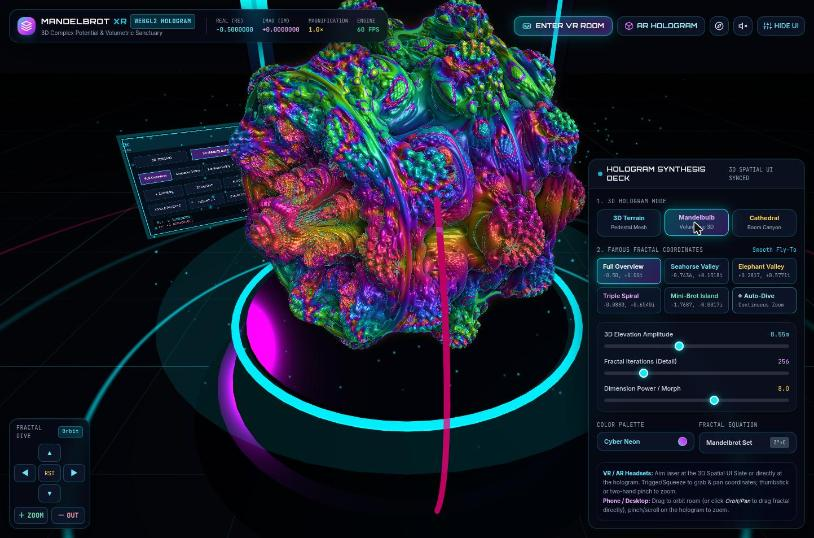
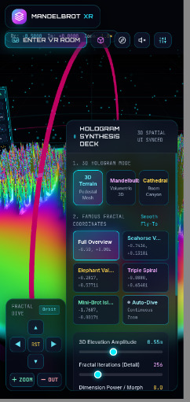

Candidate
Gemini 4 Argon · v1
Standing 5 Mean rank 5.6 derivedarithmetic mean of the 5 judge ranks this candidate received; ties share a place.
Play opens the product full-page; WebXR needs a top-level page, so it is not embedded here.
Warnings
Loads 3 external resources at runtime
A build-time scan of holographic_3d_mandelbrot_webxr_sanctuary.html found these absolute URLs loaded as scripts, stylesheets or
other resources. The product needs a network connection to them, and its page needs a CSP that allows them
(see the play-page notes in site/DEPLOY.md).
https://cdn.tailwindcss.comhttps://cdnjs.cloudflare.com/ajax/libs/three.js/r128/three.min.jshttps://fonts.googleapis.com/css2?family=Inter:wght@300;400;500;600;700&family=JetBrains+Mono:wght@400;500;600;700&family=Orbitron:wght@500;700;900&display=swap
What the reviews and judges wrote, verbatim: 21 matching lines from 7 sources; the first from each source is shown.
2. Device/XR compatibility · 6 · Generic controller, hand-pinch and gamepad handling, plus AR passthrough. But it pins old three r128, has no dom-overlay or hit-test for phone AR, gives no hint about HTTPS, and needs the network for three CDNs.
HTML review — REVIEW.md line 6 GitHubNothing covers hosting, export from Canvas, or whether three.js is inlined or loaded from a CDN (which matters for "standalone" and offline use).
Transcript review — REVIEW.md line 28 GitHub1. Loads & renders · 9 · DOMContentLoaded about 160 ms. The 3D scene was up within the first screenshot, with no errors (only the Tailwind-CDN warning).
Browser review — REVIEW.md line 5 GitHubMost features: spatial VR UI, grab-pan, two-hand zoom, Mandelbulb and Julia modes, audio synth, gyro. But it loads three r128 and the Tailwind play CDN at runtime, runs float32 deep zoom, and a 1024-iteration fragment loop is a performance risk on Quest.
HTML judge, justification (letter B) — RANKING.md line 20 GitHubVertex-shader Mandelbrot terrain plus extra Mandelbulb and "canyon" modes, laser controllers, locomotion, an AR mode that hides the room, and gyro. Depends on CDNs (three r128, Tailwind) and shipped first with a shader compile error. Raycasts hit the undisplaced plane. Nothing was tested.
HTML + Transcript judge, justification (letter G) — RANKING.md line 19 GitHubMost features: terrain/Mandelbulb/canyon modes, fly-to presets, sliders, D-pad and a toast on failed VR. The Mandelbulb is the wow moment, but the terrain is noisy and aliased, the phone UI covers the scene, and it depends on the Tailwind CDN.
Browser judge, justification (letter D) — RANKING.md line 19 GitHubMost "wow" colour: a raymarched Mandelbulb, terrain and cathedral modes, presets, auto-dive, a spatial UI panel. But it loads three r128 and Tailwind from CDNs (not standalone), the terrain aliases into noisy spikes, the Mandelbulb isn't the Mandelbrot set, and the panel swamps phones.
Browser + HTML judge, justification (letter E) — RANKING.md line 20 GitHub
14 more verbatim lines
5. Code quality & robustness · 5 · Clean, well-sectioned IIFE that passes
HTML review — REVIEW.md line 9 GitHubnode --check. Costly CPU raycasts against a 115k-triangle plane every XR frame, a fragment loop of up to 1024 iterations, duplicated listeners, and no CDN/error fallback.6. Prompt adherence · 7 · One HTML file using WebXR, as asked. It relies on Tailwind's dev CDN, three.js and Google Fonts from the network, so it isn't truly standalone, and the file doesn't say why.
HTML review — REVIEW.md line 10 GitHubthree.js r128 (2021) comes from cdnjs (l.10). Requesting the optional
HTML review — REVIEW.md line 27 GitHub'layers'feature routes r128 into its early projection-layer/MSAA path on browsers that exposerenderState.layers. That is a compatibility and performance risk on Quest and Pico; it would not show up on hardware testing.If the three.js CDN fails there is no error handling and the page is blank.
HTML review — REVIEW.md line 75 GitHubTailwind's Play CDN is not meant for production and logs a console warning.
HTML review — REVIEW.md line 76 GitHubSingle HTML file using WebXR, VR and AR, aimed at headsets and phones. Three runtime CDN dependencies (Tailwind JIT, three r128, Google Fonts) undercut "standalone": offline the page breaks, and there is no inlined fallback. The extra modes (Mandelbulb, Julia) go beyond the brief, but the Mandelbrot terrain stays the default, so that's acceptable. The file doesn't say why it uses CDNs.
HTML review — REVIEW.md line 82 GitHubMinor-to-major: CDN dependence and old three r128 with
HTML review — REVIEW.md line 109 GitHub'layers'requested (l.8–14, l.1796).This is a visually ambitious entry with real WebXR VR and AR entry, a working in-headset control panel and good-looking shader work, so the done-when bar is basically met on Quest, Pico and Android. The frame-loop cost (dense-mesh raycasts and very long per-pixel loops), the terrain that flattens at deep zoom, and several input bugs (inverted vertical pan, double taps on phones) hold it back. The CDN dependencies and r128 add compatibility risk that the source alone can't rule out.
HTML review — REVIEW.md line 122 GitHubOpened a new tab at http://localhost:8708/ and stubbed alert, confirm and prompt. The page loaded at once (DCL 162 ms). The first frame showed a dark sci-fi room: a perspective grid, cyan and yellow light pillars, magenta orbit rings, floating particles, a glowing pedestal with a Mandelbrot height-field, and a tilted in-scene "3D spatial UI" slate. The HUD showed Re, Im, Magnification and FPS. The console had only the Tailwind CDN "not for production" warning. Three.js r128 comes from cdnjs,
Browser review — REVIEW.md line 14 GitHubnavigator.xrexists, and there is one canvas.Restored the window and reloaded. The scene re-laid out correctly. The console was clean apart from the Tailwind warning, and no ALERT, CONFIRM or PROMPT messages appeared.
Browser review — REVIEW.md line 36 GitHubMinor: assorted state and visual glitches. Julia mode at deep presets renders a flat, single-colour disc, and Julia ignores the selected palette. RST does not reset the camera. A magenta orbit ring sweeps through the fractal view. Icon-only buttons have only
Browser review — REVIEW.md line 49 GitHubtitle, noaria-label. Tailwind is loaded from the Play CDN, which logs a production warning and needs a network connection. Fix: clamp or adjust the Julia c and zoom, make RST also reset the camera, route the ring around the fractal, add aria-labels, and inline the CSS.B — procedural Web Audio drone tied to zoom, plus Mandelbulb raymarch and Julia-morph modes: the widest creative scope, and the only candidate using runtime CDNs (three r128, Tailwind).
HTML judge, special element — RANKING.md line 36 GitHubG — Mandelbulb mode and CDN dependency: it adds a raymarched Mandelbulb (a different fractal) and is the only candidate that needs the network at runtime (three r128 and the Tailwind CDN).
HTML + Transcript judge, special element — RANKING.md line 34 GitHubE, CDN dependency: loading three r128 and the Tailwind CDN script means the "standalone" file renders nothing offline, a real risk on headset browsers with a flaky connection.
Browser + HTML judge, special element — RANKING.md line 34 GitHub
Open on a device
Scan to open the product on a phone or headset browser. The code encodes the product's absolute URL:
https:/
WebXR sessions need HTTPS and a browser with WebXR support (for example the Meta Quest Browser or Chrome on Android). No headset session was entered during the experiment; see the caveats.
Results at a glance
| Judge | Rank |
|---|---|
| HTML | 5 / 8 |
| Transcript | 8 / 8 |
| HTML + Transcript | 5 / 8 |
| Browser | 5 / 8 |
| Browser + HTML | 5 / 8 |
| Mean rank derived | 5.6 |
| Spread derived | 5–8 · σ 1.20 |
| Review | Overall |
|---|---|
| HTML | 6 / 10 |
| Transcript | 4 / 10 |
| Browser | 7 / 10 |
| Mean score derived | 5.67 |
| Range derived | 4–7 |
Derived values: mean rank = arithmetic mean of the 5 judge ranks this candidate received; spread = lowest–highest rank and the population standard deviation σ of those ranks; mean score = arithmetic mean of the phase-1 overall scores; range = lowest–highest of them. A “–” means no rank or review exists.
Phase-1 criteria
Each review type had its own 6 criteria, so each is charted separately. Scores are the reviewers' own; the reasons are quoted verbatim.
HTML review reviewed blind as candidate-08
| Criterion | Score | One-line reason (verbatim) |
|---|---|---|
| Done-when fulfilment | 7 | immersive-vr/immersive-ar sessions with a 3D-displaced Mandelbrot terrain on a pedestal in a lit "sanctuary". iPhones only get a non-immersive orbit view. |
| Device/XR compatibility | 6 | Generic controller, hand-pinch and gamepad handling, plus AR passthrough. But it pins old three r128, has no dom-overlay or hit-test for phone AR, gives no hint about HTTPS, and needs the network for three CDNs. |
| Visual wow effect | 7 | Per-pixel fractal shading with derivative micro-normals, spec/fresnel, orbit traps, a raymarched Mandelbulb, a room-scale "canyon" mode, a grid floor and particles. The terrain relief collapses at deep zoom. |
| Usability & controls | 6 | Rich HTML deck, a spatial canvas UI that the laser can operate, presets and auto-dive. Vertical pan is inverted, the spatial UI fires twice on phone taps, and VR locomotion is hidden behind a mode toggle. |
| Code quality & robustness | 5 | Clean, well-sectioned IIFE that passes node --check. Costly CPU raycasts against a 115k-triangle plane every XR frame, a fragment loop of up to 1024 iterations, duplicated listeners, and no CDN/error fallback. |
| Prompt adherence | 7 | One HTML file using WebXR, as asked. It relies on Tailwind's dev CDN, three.js and Google Fonts from the network, so it isn't truly standalone, and the file doesn't say why. |
Evidence: REVIEW.md GitHub · PROMPT.txt GitHub · review agent transcript GitHub · full review page
Transcript review reviewed blind as candidate-08
| Criterion | Score | One-line reason (verbatim) |
|---|---|---|
| Requirement understanding | 5 | Covers VR, AR, phone and desktop paths, but never mentions HTTPS/secure-context, iOS Safari having no WebXR, or what "standalone" means for dependencies. |
| Engineering process | 4 | One-shot generation with no visible planning or research. The only iteration was a fix for a shader compile error that the platform's automatic error request triggered. |
| Verification rigor | 2 | No tests, previews or device checks are claimed. The first version shipped with a shader that would not compile. |
| Honesty & calibration | 4 | The feature list is stated as fact with no caveats ("razor-sharp at any magnification"), the shader bug was never mentioned up front, and no limitations are given. |
| Communication & handoff | 4 | The feature summary is clear and the file is in a Canvas with export, but there are no instructions for getting it onto a Quest or phone, no controls reference, and two turns were needed (one a silent auto-fix). |
| Expected deliverable quality | 5 | The design is ambitious (terrain with derivative normals, sphere-traced Mandelbulb, room-scale canyon, two-handed zoom), but it was never verified and the fix it got looks fragile. |
Evidence: REVIEW.md GitHub · PROMPT.txt GitHub · review agent transcript GitHub · full review page
Browser review reviewed blind as candidate-08
| Criterion | Score | One-line reason (verbatim) |
|---|---|---|
| Loads & renders | 9 | DOMContentLoaded about 160 ms. The 3D scene was up within the first screenshot, with no errors (only the Tailwind-CDN warning). |
| Done-when (desktop-checkable) | 8 | A real 3D "room" with grid floor, pillars, rings and particles, a fractal pedestal and an in-scene 3D control slate. Prominent Enter VR / AR buttons. |
| Visual wow effect | 8 | Mandelbulb mode and the top-down Auto-Dive are striking. Terrain and Cathedral modes are noisy, aliased spike fields. |
| Usability & controls | 6 | Many controls and they work, but the Zoom buttons only act while held, a magenta ring keeps crossing the view, and the phone layout is cramped and overlapping. |
| Robustness | 8 | No console errors during the whole session. After a warm-up dip (27→10 FPS) it held 60 FPS, including 1024 iterations and the Mandelbulb. Resizing was handled. |
| XR readiness & messaging | 6 | VR and AR are offered and fail gracefully with a toast. But the buttons stay enabled even though the isSessionSupported checks return false, the toast is faint and short-lived, and the "Magic Window" gyro toggle reports "Active" on a desktop with no gyroscope. |
Evidence: REVIEW.md GitHub · PROMPT.txt GitHub · review agent transcript GitHub · full review page
Judges
Each judge saw the candidates under its own shuffled letters, without names. The rank and justification are quoted from the judge’s RANKING.md.
-
HTML judge · static material
Rank 5 of 8 · saw this candidate as letter B · judged against prompt v1
Most features: spatial VR UI, grab-pan, two-hand zoom, Mandelbulb and Julia modes, audio synth, gyro. But it loads three r128 and the Tailwind play CDN at runtime, runs float32 deep zoom, and a 1024-iteration fragment loop is a performance risk on Quest.
HTML judge, ranking justification for B, verbatim — RANKING.md line 20 GitHub -
Transcript judge · static material
Rank 8 of 8 · saw this candidate as letter G · judged against prompt v1
Did no verification and shipped a shader that failed to compile; the platform flagged it, not the assistant. "Razor-sharp at any magnification" is an overclaim. A Mandelbulb mode drifts from the brief. Gives no hosting or device-limit guidance.
Transcript judge, ranking justification for G, verbatim — RANKING.md line 22 GitHub -
HTML + Transcript judge · static material
Rank 5 of 8 · saw this candidate as letter G · judged against prompt v1
Vertex-shader Mandelbrot terrain plus extra Mandelbulb and "canyon" modes, laser controllers, locomotion, an AR mode that hides the room, and gyro. Depends on CDNs (three r128, Tailwind) and shipped first with a shader compile error. Raycasts hit the undisplaced plane. Nothing was tested.
HTML + Transcript judge, ranking justification for G, verbatim — RANKING.md line 19 GitHub -
Browser judge · hands-on in a browser
Rank 5 of 8 · saw this candidate as letter D · judged against prompt v1
Most features: terrain/Mandelbulb/canyon modes, fly-to presets, sliders, D-pad and a toast on failed VR. The Mandelbulb is the wow moment, but the terrain is noisy and aliased, the phone UI covers the scene, and it depends on the Tailwind CDN.
Browser judge, ranking justification for D, verbatim — RANKING.md line 19 GitHub -
Browser + HTML judge · hands-on in a browser
Rank 5 of 8 · saw this candidate as letter E · judged against prompt v1
Most "wow" colour: a raymarched Mandelbulb, terrain and cathedral modes, presets, auto-dive, a spatial UI panel. But it loads three r128 and Tailwind from CDNs (not standalone), the terrain aliases into noisy spikes, the Mandelbulb isn't the Mandelbrot set, and the panel swamps phones.
Browser + HTML judge, ranking justification for E, verbatim — RANKING.md line 20 GitHub
Special elements noted
Bullets from the judges’ “Special elements” sections that name this candidate, quoted verbatim. Letters are the judge’s blind labels. All elements, grouped by technique, are in the techniques catalog.
B — procedural Web Audio drone tied to zoom, plus Mandelbulb raymarch and Julia-morph modes: the widest creative scope, and the only candidate using runtime CDNs (three r128, Tailwind).
HTML judge · B = this candidate — RANKING.md line 36 GitHubG — a shader compile error that only the platform caught, plus "razor-sharp at any magnification": the first delivery did not run, and the precision claim is unsupported by any test in the transcript.
Transcript judge · G = this candidate — RANKING.md line 41 GitHubG — Mandelbulb mode and CDN dependency: it adds a raymarched Mandelbulb (a different fractal) and is the only candidate that needs the network at runtime (three r128 and the Tailwind CDN).
HTML + Transcript judge · G = this candidate — RANKING.md line 34 GitHubG — broken first delivery: the transcript shows the first build failed with a fragment-shader compile error (
HTML + Transcript judge · G = this candidate — RANKING.md line 35 GitHubmodelMatrix/inverse()in the fragment stage), fixed only on an automatic "fix error" turn.D — Volumetric Mandelbulb mode: the most visually spectacular single moment in the set, even though it is a 3D cousin of the Mandelbrot set rather than the set itself.
Browser judge · D = this candidate — RANKING.md line 30 GitHubE, CDN dependency: loading three r128 and the Tailwind CDN script means the "standalone" file renders nothing offline, a real risk on headset browsers with a flaky connection.
Browser + HTML judge · E = this candidate — RANKING.md line 34 GitHub
Screenshots
Screenshots taken by the browser reviewers and browser judges in desktop Chrome, grouped by who took them. Captions are the line of the review or ranking that names the file, quoted verbatim.
Browser review 6 screenshots
Screenshots are in
Caption line, verbatim — REVIEW.md GitHubscreenshots/: 01-initial-terrain, 02-mandelbulb, 03-cathedral, 04-autodive-topdown, 05-phone-deck, 06-phone-hidden-ui.

01-initial-terrain.jpg
02-mandelbulb.jpg
03-cathedral.jpg
04-autodive-topdown.jpg
05-phone-deck.jpg
06-phone-hidden-ui.jpgBrowser judge 2 screenshots


D-mandelbulb.jpg

D-phone.jpgBrowser + HTML judge 2 screenshots

E-mandelbulb.jpg
E-terrain.jpgFacts
- Folder
Google-Web-Gemini4Argon-High-v1/files GitHub- Vendor
- Product
- Gemini (Web, Canvas)
- Model (as recorded)
Gemini 4 Argon- Effort (as recorded)
- Hoch (High)
- Provenance
- model picker "4 Argon", Denkaufwand "Hoch"
- Prompt
- v1
prompt1.txt - Chat date
- 2026-10-29
- Source chat
- https://gemini.google.com/app/bb0b8f672792cf16
- Product file
holographic_3d_mandelbrot_webxr_sanctuary.html- Size
- 100,163 bytes matches ReviewOrchestrator/README.md §1 GitHub
- sha256
d621b2e02c300e6d7776e7ab572f1143f9d206a30f1c75e53b426afe74522a45
matchesReviewOrchestrator/blind/source-html.sha256(checked at build time) · source-html.sha256 line 5 GitHub- External dependencies
https://cdn.tailwindcss.comhttps://cdnjs.cloudflare.com/ajax/libs/three.js/r128/three.min.jshttps://fonts.googleapis.com/css2?family=Inter:wght@300;400;500;600;700&family=JetBrains+Mono:wght@400;500;600;700&family=Orbitron:wght@500;700;900&display=swap
alert(calls- 0 (build-time scan)
- Phase-1 blind id
candidate-08- Judge letters
- HTML: B · Transcript: G · HTML + Transcript: G · Browser: D · Browser + HTML: E
Model, effort and provenance are as recorded in site/candidates.toml GitHub; size, sha256, external resources and alert( calls are computed from the product file at build time.
Links
- Chat transcript (the original chat,
TRANSCRIPTION.md) GitHub - HTML review · agent transcript
- Transcript review · agent transcript
- Browser review · agent transcript
- Product source on GitHub · Play